Module 1
1-2 Mobile Panini
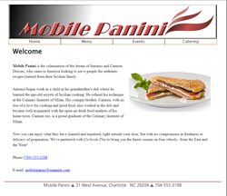This assignment brought all the basics of HTML to make a new website. This one a kept having typos in my code which would make my website not load correctly. I would then have to dissect my code to find the problem. This did seem easier to do over something like Python though which was a plus.
1-3 Mountain Wheels
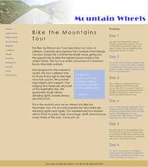This assignment brought the basics of css to give a website some style. This one I did struggle a little bit with wanting to put = to assign things like color. Then there was also the alternating color on the aside I had a hard time trying to get the correct syntax on it. Luckly it came together in the end.
Module 2
2-2 Pandaisia March Specials
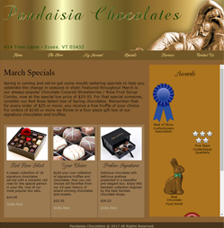This assignment was about using different types of formatting for a webpage through css.
2-4 Dakota Listener Radio Morning Broadcast schedule
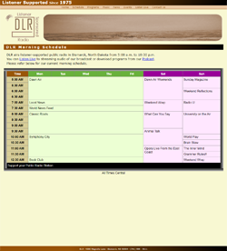This assignment we used html tables and css to make the morning broadcast schedule for DLR.
Module 3
3-2 The Ferris Family
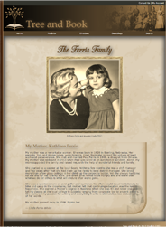This assignment we used html and css to add graphic design to the webpage.
3-5 Red Ball Pizza Customer Page
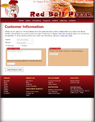This assignment we used html and css to make forms and style them.
3-5 Red Ball Pizza Buiilder Page
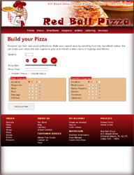This assignment we used html and css to make forms and style them.
Module 5
5-2 Star Dust Stories
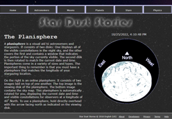This assignment we used JavaScript to make a working clock and inserted into the HTML code. Then we also used it to insert an image and update acourding to time and month.
5-4 Lyman Hall Events
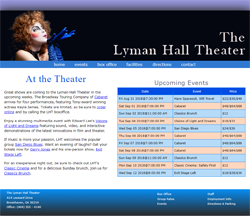This assignment we used JavaScript to make table and filled the table with a loop. We also used an if statement to get the correct information needed for the table.
Module 6
6-2 Hitori Puzzle Page
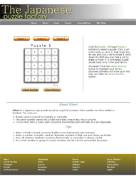This assignment we used JavaScript to make a interactive hitori puzzle game using evenListeners and updating styles.
6-4 Federalist 10 Article
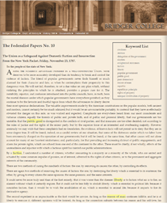This assignment we used JavaScript to make an aside element and dynamically created key wordlist with links from dfn tags. We also added an embedded style sheet to add style to the aside.